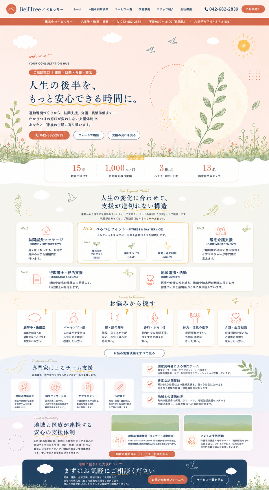

モック方向性 確定版（リファレンス画像）
左：images2.0 出力のオリジナル42.png ─ 右：私が組んだ v2 実HTML
運用方針：
このページの左パネル＝最終的なデザイン方向性のリファレンス（=ゴール）。右パネル＝現状の実装（差分を埋める対象）。 v2 実HTML を 左の世界観に寄せて段階的に改修していきます。差異の指摘は左右を比較しながら。
REFERENCE v4
最新方向性モック v4（2026-06-02 19:59・images2.0 出力）
HERO草原が豊かに／blob+葉枝完成度UP／全セクション仕上がり。これが現行ゴール。

CURRENT v2
現状の実HTML（mockup-corporate-entry-v2-with-materials.html）
左に寄せる対象。リンクは動く。
リファレンス画像を新タブで開く
実HTML を新タブで開く